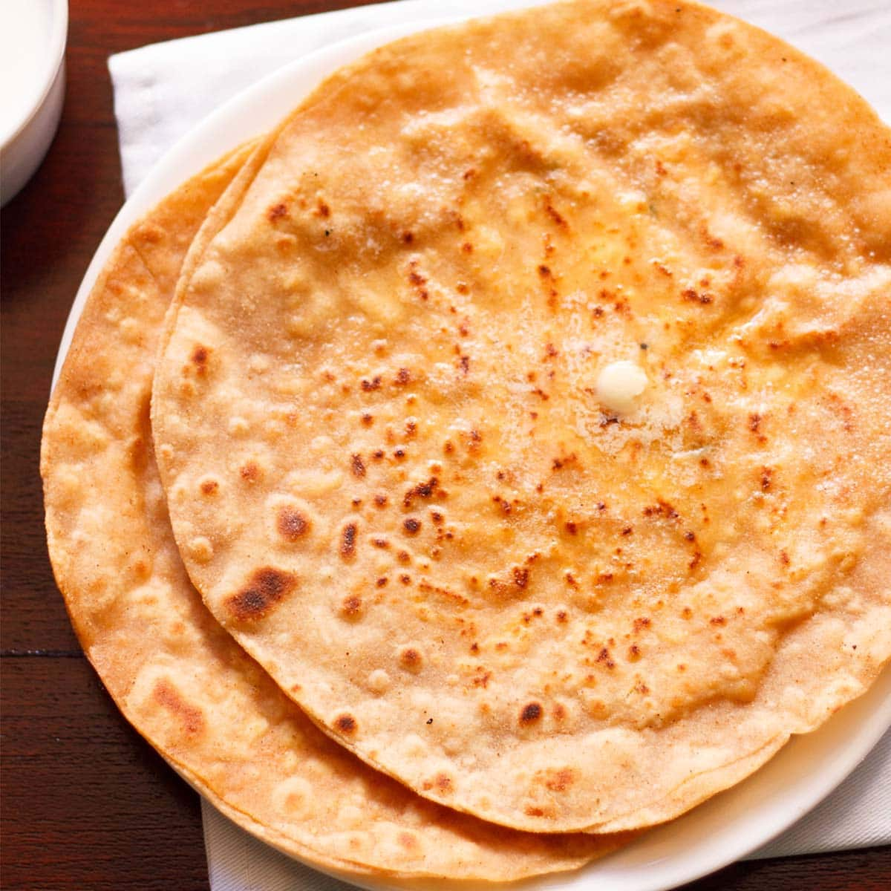

Paneer Paratha

Description
Paneer paratha is a popular North Indian flatbread made with whole wheat flour dough and stuffed with savory, spiced, grated paneer (Indian cottage cheese) stuffing. Paneer paratha is one of the most popular stuffed paratha varieties from Punjab and usually made for breakfast.
recipe of paneer paratha which is not very spicy and easy to make. You also don’t need to cook the paneer prior to make these parathas. Simply add the herbs and spices to crumbled paneer. Then fill this paneer stuffing in the rolled dough and roast the paratha.
I always recommend making your own Homemade Paneer – cottage cheese and use it for any paneer dish that you make. So is the case with this paneer paratha. The paneer retains its freshness and softness even when cooked. The filling has a lovely moistness and you will not feel any dryness. The paneer also has a nice soft texture in the filling.
-
Take 2 to 2.25 cups whole wheat flour, ½ teaspoon salt, 1 teaspoon ghee or oil in a mixing bowl.
-
Pour about ½ cup of water.
-
Mix and begin to knead. Add more water if required and knead to a smooth soft pliable dough. Overall I added ⅔ cup water. I recommend not to add all the water at once. Add water bit by bit as you go on kneading the dough.
-
Cover the bowl with a lid and allow the dough to rest for 20 to 30 minutes.
-
Meanwhile while the dough is resting, prepare the stuffing. Grate 200 grams of paneer (Indian cottage cheese). If using frozen paneer then follow the package instructions.
For the best taste and texture the paneer should be soft and fresh. A rancid paneer will make the paratha sour or bitter. Thus better not to use it.
I recommend to grate the paneer and not crumble with your hands. Grating ensures even sizes of the paneer. But when crumbled with hands then you may get some bigger pieces which may break the paratha while rolling.
-
Add 1 or 2 finely chopped green chilies, ½ teaspoon dry mango powder, ½ teaspoon garam masala powder, ½ teaspoon red chili powder and ½ teaspoon salt. You can add more salt, red chili powder or dry mango powder if you prefer.
Ensure that the green chilies are finely chopped or they will come out while rolling.
-
Mix everything well with a spoon so that the ground spice powders are uniformly mixed with the grated paneer.
-
Pinch two small balls from the dough and roll them in your palms to make them even.
-
Dust some flour on the dough balls.
-
With a rolling pin, roll the dough balls to a circle of about 4 to 5 inches in diameter.
-
Place the paneer stuffing on one of the rolled rounds keeping one-inch space around the circumference.
Don’t under-fill or overfill with the stuffing. If you overfill the stuffing then it can come out while rolling. On the other hand, if you under-fill the stuffing then you get less taste of the paneer stuffing and more of the dough.
-
Cover with the other rolled dough. Press and seal the edges to close the layers.
-
Sprinkle some flour and roll the stuffed paratha to a circle of about 6 to 7 inches in diameter.
-
Heat a tava or griddle or skillet and then place the rolled paratha on it. The tava should be hot.
To check the heat, sprinkle a generous pinch of whole wheat flour on the tawa. If the whole wheat flour becomes brown in some seconds, the tawa is hot enough to roast the paratha.
-
Flip when one side is partly cooked. About ¼ cooked. You will see some air pockets and light blisters on this side.
-
Apply ghee or oil on this side with a spoon.
-
When the second side is half cooked then turn over and flip using a spatula.
-
Let the side in which we applied ghee get cooked now.
-
Spread some ghee on the top.
-
Flip again.
-
Press the edges of paratha with a spatula so that the edges are cooked. A well stuffed and rolled paratha will puff up slightly while cooking.
-
Flip once or twice till the paratha has golden spots and is evenly cooked.
-
If serving later, place the paneer paratha in a roti basket or casserole.
-
Optionally, you can place some softened butter on top.
-
Spread the butter on the paratha with a spoon.
-
Wipe the excess whole wheat flour if any, with a cotton kitchen napkin. So that the browned whole wheat flour particles do not stick to the parathas. Make all parathas this way on the tawa/griddle.
-
Keep on stacking them in the roti basket or casserole. Spread some butter on each paratha while stacking them.
if not stacking them, then serve the paneer paratha hot with mango pickle or even mint coriander chutney. They can also be packed for lunch box.
Best to have them hot as they are prepared. A cup of hot tea will also go very well during monsoons or winters.
Back